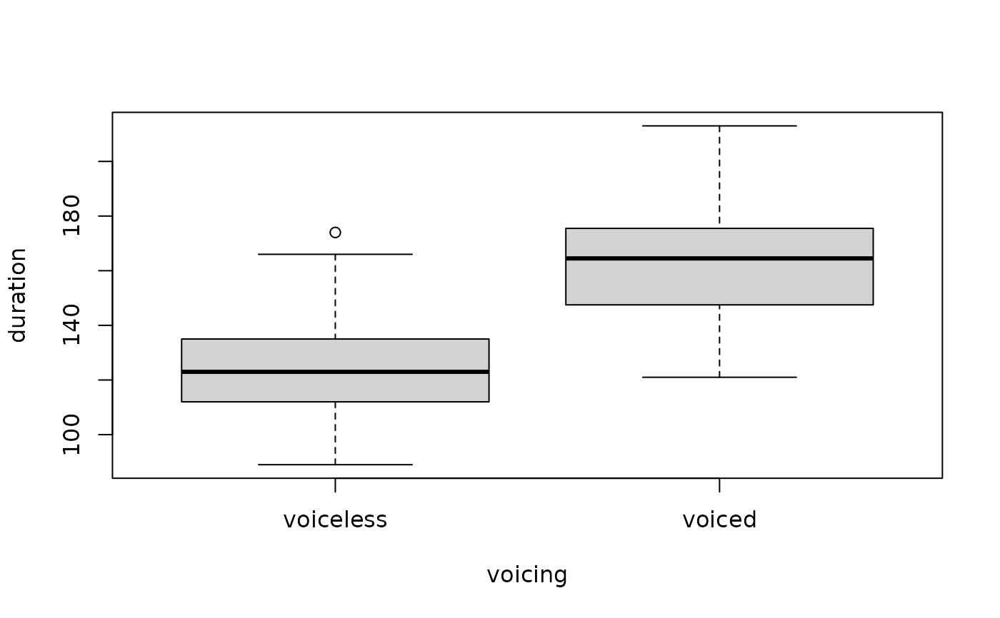

A production study: 60 vowels before voiceless consonants (beat) and 60 before voiced ones (bead).
Format
A tibble with 120 rows and 2 columns:
- voicing
"voiceless"or"voiced".- duration
Vowel duration in ms.
Details
True model: mean 120 ms (SD 20) before voiceless and 160 ms (SD 22) before voiced consonants.
Examples
t.test(duration ~ voicing, data = vowel_voicing)
#>
#> Welch Two Sample t-test
#>
#> data: duration by voicing
#> t = -10.471, df = 117.99, p-value < 2.2e-16
#> alternative hypothesis: true difference in means between group voiceless and group voiced is not equal to 0
#> 95 percent confidence interval:
#> -44.90931 -30.62403
#> sample estimates:
#> mean in group voiceless mean in group voiced
#> 124.3000 162.0667
#>
boxplot(duration ~ voicing, data = vowel_voicing)
